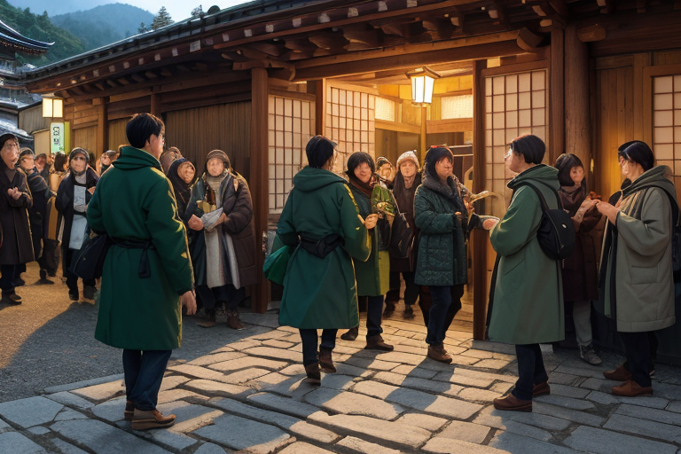
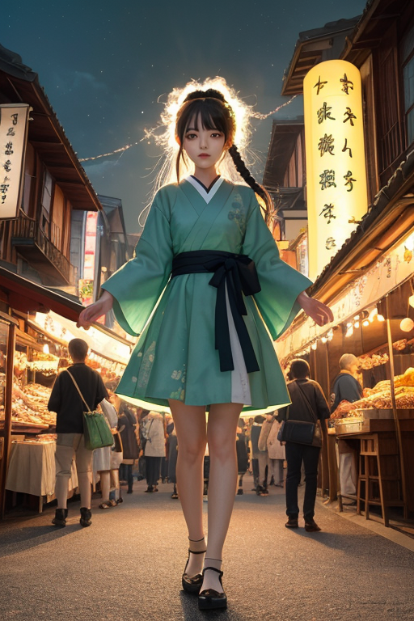
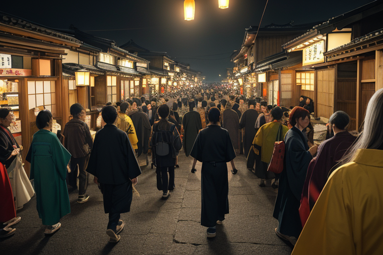
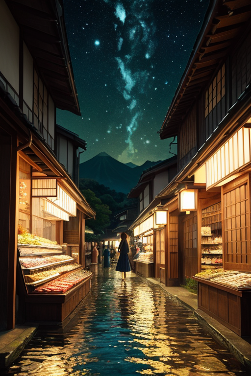
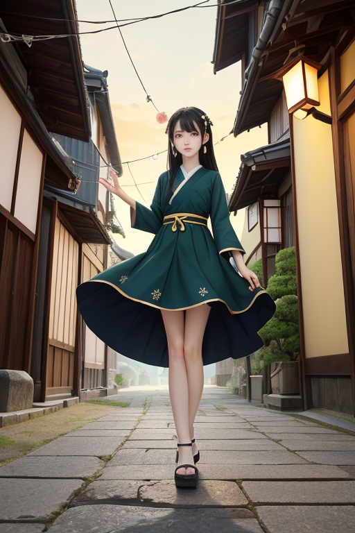

第一章 現実の岐阜
あなたはまだ気づいていない。この土地にも、王がいることを。
高山の古い町並み。格子戸の商家が軒を連ね、観光客のざわめきと飛騨牛の脂の香りが通りを満たす。金の流れは活気に満ち、欲望と期待が石畳を温める。しかし、その賑わいの下には、常に「境目」が横たわっている。北アルプスと濃尾平野の境。飛騨と美濃の境。過去と現在の境。人の心の境。
そのすべての境目の、ちょうど均衡点に立つ男がいた。深緑のコートを纏い、金の縁取りが微かに光る。彼はギフリア・バランス、この地に遣わされた均衡王である。彼の目には、人々の営みの下を流れる、もう一つの「流れ」が見えている。大地のプレートが接する、巨大な歪みの脈。商いの活気は、時にその歪みを刺激し、微かな軋みを生む。
王はそっと手をかざした。主席妖精バラントが、境界線に淡い光の膜を張る。郡上八幡で夜通し続く踊りのリズム、朴葉味噌を焼くかすかな煙。それら日常の営みの「調和」を少しだけ増幅し、歪みの波紋をなだめる。彼らは災害を消せない。ただ、境目で立つバランスを、ほんの一瞬、ほんの少し、保つだけだ。

第二章「歪みの兆候」
高山の古い町並みを、観光客の波が洗う。軒を連ねる土産物屋には飛騨牛の加工品や和紙細工が並び、金の流れは活発だ。しかし、均衡王ギフリア・バランスは、その賑わいの底に、ごく微かな「ずれ」を感じ取っていた。人の欲望が集中する地点、商いの熱が一点に凝縮されるその圧力が、地下に眠る断層の「境目」を、かすかに刺激している。
「活気そのものが、新たな歪みを生みうる」。主席妖精バラントが、冷静に分析する。郡上踊りの囃子が遠くから聞こえる。あの継続的なリズムは、かつては歪みを鎮める調和の波だった。だが今、観光化され、スケジュールに組み込まれたそのリズムは、本来の自然な「間」を失い、かえって地脈に細かい乱れを生じさせつつあった。
王は無言で、金の均衡線を手に浮かべる。消すことはできない。商都の熱、人の欲望、それらはこの土地の命でもある。彼にできるのは、その流れが一点に偏重しないよう、分散させ、調和させる微調整だけだ。下呂温泉から立ち上る湯気の向こう、山肌の断層が、観光バスの振動に合わせて、ほんの少し、息を潜めている。

第三章 王の葛藤
郡上八幡の夜、踊りの輪が広がる。観光客の笑顔は本物だが、その熱量は、過剰な照明と拡声器の音と共に、古い町並みの木造家屋を微かに震わせる。王は屋根の上に立ち、深緑の衣を夜風になびかせながら、その振動を感じ取っていた。人の喜びは尊い。だが、その波が土地の「間」を圧迫し始めている。
「ギフリス、断層の応答は」
「増幅傾向です。特に北側の活断層が、この『人工的なリズム』に共鳴しつつあります」
妖精ギフリスの報告は淡々としていた。王は金の均衡線を指先でなぞる。観光客の楽しみを奪うことなく、地脈の乱れを鎮める。その絶妙な境目が、今、最も問われている。
彼は感情を持たぬ存在として設計された。しかし、眼下の踊る人々の一瞬一瞬の輝きは、彼の内側に「消したくない」という微かな疼きを生じさせた。守護とは、時に、守る対象そのものが生み出す歪みと向き合うことだ。王は静かに息を吐き、均衡線をほんの少し、人々の足元の地面へと沈めていった。震えは止まらないが、その方向を分散させ、一点の破綻を防ぐ。それが、今の彼にできる精一杯の調整だった。

第四章 妖精との対話
郡上八幡の水路沿い、夜更けの店先に一人佇む王に、主席妖精バラントが声をかけた。「商いとは、境界を往来する行為です。飛騨牛も、和紙も、この地で生まれ、境を越えて価値となる」。その声は、冷たい水の音のように澄んでいた。
「人々は、境目で損得を量り、信頼を賭け、時には欺く。その全ての流れが、この土地の『密度』を高める。金の流れ、欲望の波。それらが、断層に沿った歪みを、時に増幅させるのです」
王は黙って聞く。彼の目には、高山の古い町並みを埋める観光客の群れ、土産物屋の明かり、そこに交錯する期待と落胆の微細な感情の揺らぎが見えていた。守るべきは、この喧噪そのものなのか。
「我々が調整できるのは物理的な歪みだけです」とバラントは続ける。「しかし、境界で立つということは、どちらにも与せず、どちらをも見据えること。商都の熱気も、山国の静寂も、等しくこの地の『調和』の要素です」
王は、掌に浮かぶ深緑と金の紋章を見つめた。均衡とは、単なる静止ではない。活気と欲望という激流の、ただ中に立つこと。

第五章 微調整と余韻
郡上八幡の夜明け前、踊りの余韻が石畳に染み込んでいるかのような静けさがあった。王は宿場町の一角に立ち、目を閉じた。今日もまた、無数の人の流れがこの地を通過する。観光客、商人、地元の人々。その一人一人の足取り、一瞬の選択が、見えない歪みを生み、あるいは和らげる。
彼の働きは微細だ。観光バスの到着時刻を三十秒遅らせ、混雑する交差点で一人の老人が躓く石を、ほんの少しだけ路傍に転がす。飛騨牛を運ぶトラックのエンジントラブルを、次のサービスエリアまで発生しないよう調整する。それは、巨大な欲望と活気の奔流の中で、ほんの一滴の水の軌道を変えるようなものだ。
誰も気づかない。大災害が起きないことなど、記録にも残らない。彼が立つのは、賑わいと静寂、利益と生活、過去と未来の境目だ。どちらにも偏らず、ただ均衡線を保ち続ける。
夕暮れ、高山の古い町並みに人影が少なくなる頃、王はそっと息をついた。今日も、歪みは許容範囲内に収まった。目に見える功績は何もない。ただ、この町の日常が、ほんの少しだけ調和を保って続いている。
あなたの町にも、王がいる。